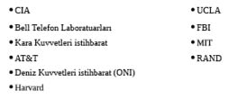
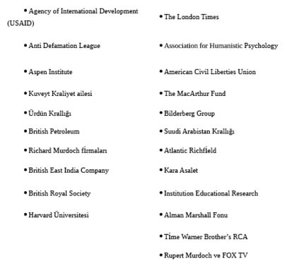
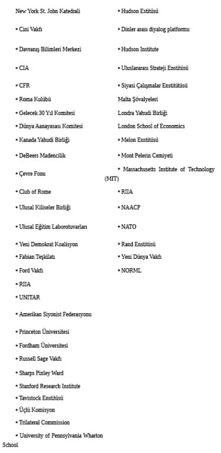

BÖLÜM 31
300’ler Komitesi’nin Gizli Hizmetkârları
300’ler Komitesi’nin bu büyük ölçekte operasyonları nasıl gerçekleştirdiği hep merak edilir. Aslında bu sorunun yanıtı basittir çünkü Komite vatanını satmayı göze alarak Yeni Dünya Düzeni- Tek Dünya Devleti hiyerarşisi içinde yükselmek isteyen eğitimli kişileri saflarında kullanmaktadır. Aşağıda dünyayı yöneten bu uluslar üstü karanlık, gizemli örgüte bulundukları yüksek mevkilerden hizmet eden bazı insanlar hiçbir sıra takip edilmeksizin verilmektedirler.
Douglas Dillon
Dillon’un John Foster Dulles ve kardeşi Allen üzerindeki ekonomik planlama ile ilgili kontrol ve manipülasyonu Amerika’nın dış ve ekonomik siyasetinde büyük rol oynamıştır. Her ne kadar Arthur Burns Başkan Dwight D. Eisenhower’ı yönlendiriyor gibi görülmüşse de başkanın döneminin son bölümünde Amerika Birleşik Devletleri dış siyaseti ve ekonomisini sabote eden Allen ve John Foster Dulles kardeşler olayların şekillendiricileri haline gelmişlerdir. Dillon 300’ler Komitesi için yaptığı üstün çalışmalar sonucunda Amerika’da başkan seçilecek kişinin Demokrat veya Cumhuriyetçi olmasının önemini ortadan kaldırmıştır.
Artık Amerikan halkının uyanarak seçtikleri kişilerin ait oldukları partilerin hiçbir önemi olmadığını görmesi gerekmektedir. Dillon 1960 yılında Amerikan ekonomisine sabotaj yapmak üzere 300’ler Komitesi’nce seçilmiştir. Görünüşte Cumhuriyetçi gibi gözükse de Dillon’un Demokratlarla ortak noktaları çok fazladır. Dillon Amerika’daki üst pozisyonlara yerleştirdiği kişilerle bilinen Dillon Reed firmasının kurucusunun oğludur. Dillon bir Wall Street bankeri olarak güya Eisenhower’ı ülke için yararlı olan ticari politikalar konusunda yönlendirmiştir. Tabii ki bu yararlı ticari politikalar Komitenin belirlediği amaçları kapsamaktadırlar.
1960 yılında Dillon Cenevre’ye gönderilerek Amerikan ticaretine büyük zarar vermeyi amaçlayan Gümrük Tarifeleri ve Ticaret Genel Anlaşması (GATT) pazarlıklarına katılması sağlanmıştır. Amerikan Uluslararası Ticaret Komisyonu raporuna göre Dillon’un yönlendirmesiyle Eisenhower Amerika’nın hâlihazırda zemin kaybettiği ürünlerin gümrük tarifelerini düşürmüş ve Amerikan ekonomisini bir daha toparlayamaz hale getirmiştir. Ekonomistlere göre yapılan gümrük tarifelerindeki indirimler iç üretimin sonu anlamına gelmektedir. Amerika için ölümcül olan bu ticari davranışı Eisenhower “Ortak Pazardan daha fazla pay” almak amacıyla açıklamaktadır. Adam Smith “Serbest Ticaret” prensiplerinin sıkı bir takipçisi olan Dillan Başkan John F. Kennedy tarafından Hazine Bakanlığına getirilmiştir.
Eisenhower döneminin sonunda salgına dönüşen Amerikan altın rezervlerinin eritilmesi felaketi Dillon’un eseridir. Dillon George Ball’un takımı ile birlikte Başkan John F. Kennedy’i Avrupa piyasalarına daha fazla altın göndermeye ikna etmiştir. Paranın devrimler ve savaşlarda oynadığı rolün büyüklüğünü bilmeyen Kennedy yapılacak korkunç işlemin Amerikan ödemeler dengesini sağlayacağını düşünmektedir. Kennedy Dillon’un gümrük tarifelerini %50 düşürme planına onay vermiştir.
İstihbarat raporlarına göre bu ölümcül planın arkasında MI6 vardır ve görevi Kraliyet Uluslararası İlişkiler Enstitüsü’ne (RIIA)’ya vermiştir. Dillon RIIA tarafından Komite’nin görevini yerine getirecek kişilerden biri olarak tespit edilmiştir. George Ball ile ortak çalışmalar sonucu Amerikan endüstriyel gücüne büyük darbe NAFTA anlaşmasının ilk denemesi de Dillon tarafından gerçekleştirilmiştir. İyileşme trendinde olan Amerikan ekonomisine ölümcül zehir Eisenhower tarafından verilmiş ve ülkemizin cenazesini kaldırmak Kennedy’e düşmüştür.
Dean Rusk
Dean Rusk Kore Savaşı sırasında General Douglas MacArthur’e oynadığı oyun ile 300’ler Komitesi’nde bir hizmetkâr olarak yükselmiştir. Kore Savaşı 300’ler Komitesi emirlerini hiçbir şekilde kabul etmeyen Stalin’e karşı ortaya çıkmış bir olaydır. Stalin kendi deyimi ile “Washington kozmopolitleri (Yahudileri) ve işbirlikçilerinin Rusya’yı ele geçirmelerine izin vermeyecektir.” Kuzey Kore tanklarının 39. Paraleli geçmeleri sonrası Amerika’dan “Berlin Duvarı” tepkisi beklenmektedir. Berlin duvarını yıkarak Sovyet ordusu ile karşılaşmayı göze alamayan Amerika Berlin’e “hava köprüsü” kurmuştur. İngiltere ve Amerika’daki medya çakalları “hava köprüsünü” Amerikan’ın bir zaferi olarak göstermelerine karşın aslında bu tam bir yenilgidir. Amerika’nın Mao’nun Çin’de, Castro’nun ise Küba’da başa geçmelerine izin verdiğini gören Kuzey Koreliler giriştikleri işgale karşı Amerika’dan bir tepki beklememektedirler. 300’ler Komitesi Stalin’ce desteklenen Kuzey Korelileri yenmek değil baskı altında tutmak istemektedir. Sonuçta Başkan Truman Amerika Birleşik Devletleri’ni hazır olmadığı bir savaşa Birleşmiş Milletler’in kendisine verdiği yetki yalanıyla sokar.
General Douglas MacArthur Truman gönderdiği şifreli mesajda kendisinin Amerikan Hava Kuvvetleri’nden General George E. Stratemeyer’e Yalu Nehri kıyısında bulunan 56 artçı lojistik Çin ordusu merkezini bombalaması emrini vereceğini bildirir. Amerikan Hava Kuvvetleri ayrıca Yalu Nehri üzerindeki tüm köprüleri de bombalayacaklardır.
Mesaj üzerine Truman tüm danışmanlarını Blair House’da toplar danışmanlardan Dean Rusk MacArthur’un planına çok karşı çıkmaktadır. İstihbarat raporlarına göre toplantıda Rusk Truman’a RIIA ile görüştüğünü söyler ve “Amerika Birleşik Devletleri’nin Yalu Nehrinin Mançurya tarafındaki Çin mevzilerine saldırmadan önce İngiltere’nin onayını alması gerektiğini” hatırlatır. Truman’ın yıllar sonra kaleme aldığı Years of Trial and Hope isimli kitapta tüm bunlar vardır.
Çin hükümetiyle afyon ticaretinde ortak çalışan Forbes, Delano ve Perkins aileleri MacArthur’un saldırısının gerçekleşmesi halinde büyük zarar göreceklerdir. Kendileri de 300’ler Komitesi üyeleri olan bu büyük aileler Komiteden bu saldırıyı durdurmasını isterler. İngiliz afyon hanedanın baskılarına boyun eğen Başkan Truman MacArthur’e “Mançurya sınırına beş mil alan içindeki hiçbir hedefe ateş açılmaması” emrini verir.
Amerikan halkının MacArthur’e verdiği büyük desteğe rağmen Dean Rusk Truman’ı verdiği emri değiştirmemesi konusunda ikna eder. 26 Kasım tarihinde McArthur istifa etmek üzereyken 250.000 Çin askeri Yalu Nehrini geçerek Amerikan güçlerine saldırırlar. Truman ve Rusk’ın ihanetlerine karşın Amerikan askerleri bu büyük saldırı karşısında ellerinden geleni yaparlar ancak o zamana kadar Amerikan tarihinde görülen en büyük askeri yenilgiyi almaktan kurtulamazlar. Rusk Truman’dan MacArthur’u görevden alması için baskı yapmaktadır. Uzun ve zorlu bir dönemden sonra Amerikan ordusu Kore’de üstünlüğü ele alır. Bu durumda Rusk 300’ler Komitesi’nden gelen emirleri Truman’a iletir ve derhal “ateşkes” çağrısı yapmasını ister. Komite’ye her zaman sadık bir hizmetkâr olan Truman “ateşkes” çağrısını “Komünistler geri çekilmekteler, derhal Çin’e Kore’den çıkması veya askeri gücünün yok edileceği ültimatomunu verelim.” diyen MacArthur’un muhalefetine karşın yapar.
Daha da ileri giderek MacArthur’u görevinden alan Truman vatana ihanet etmiş ve Kore Savaşı’nda binlerce askerimizin gereksiz ölümüne neden olmuştur. Askeri raporlara göre Kore Savaşı’ndaki kayıplarımızın %60’ı General MacArthur görevden alındıktan sonra gerçekleşmiştir. Tüm bunlar afyon ticaretinde ortak olduğu Çin’i kırmamaya çalışan 300’ler Komitesi nedeniyle gerçekleşmiştir.
Israel Helphand (Parvus)
1917 yılında gerçekleşen Bolşevik Devrimi Amerika’da yerleşik sosyalist oluşumlarda zafer havası yaratarak faaliyetlerinin hızlanmasını sağlamıştır. Pek çok tarihçi bu başarıyı Israel Helphand’e bağlamaktadır. “Parvus” olarak tanınan Helphand pek çok devrimciye ev sahipliği yapan İsviçre’de okur ve daha sonra Sosyalist Enternasyonal temsilcisi olarak çok büyük servet yapacağı Osmanlığı İmparatorluğu’na yerleşir. Buradan Almanya’ya geçen Helphand sosyalist Die Glocke gazetesini çıkarır. O zamanlar Sosyalist Enternasyonal’in küçük bir parçası olan Rus Sosyal Demokrat Parti Başkanı olan Lenin Helphand ile tanışır. Helphand Lenin ve Troçki’yi bir araya getirerek “Rusya’nın iyiliği” için çalışmaya ikna eden kişidir.
Walter Rathenau
Alman hükümetinde görev alan ve Almanya’da Sosyalist lider olarak bilinen Rathenau 300’ler Komitesi’nce Almanya’ya sosyalizmi getirecek kişi olarak görülmektedir. Birinci Dünya Savaşı sonrası organize ettiği büyük gösteriler Alman sanayicileri korkuya düşüren Rathenau bu çevrelerin Hitler’i desteklemelerine ve kendisini toplum düşmanı ilan etmelerine neden olmuştur. Rathenau Paris Barış görüşmelerinde Clemencau’nun baş ekonomik danışmanı ile Almanya’nın savaş tazminatlarını ayni olarak ödemesi konusunda anlaşırken sadece 300’ler Komitesi’nin emirlerini yerine getirmektedir. Rathenau Dr. Jacob De Hass ile birlikte 300’ler Komitesi’ni açıklayan ilk kişilerden biridir. Bu nedenle Rathenau 24 Haziran 1922’de öldürülür. Ölümünden kısa süre önce şöyle demektedir:
“Kimlikleri sadece birbirleri tarafından bilinen kişilerce oluşturulan 300 kişilik bir komite tüm dünyayı yönetmektedir.”
Rathenau’nun katilleri tutuklandıktan sonra intihar etmişlerdir.
Harry Hopkins
Hopkins 300’ler Komitesi’nce John Maynard Keynes’in ekonomik intihar teorilerini Roosevelt’e pazarlamak üzere işe alınmıştır. Tanınmış bir sosyalist olan Hopkins Roosevelt’in “işsizlik yardımı” amacıyla kurduğu organizasyonun başına getirilmiştir. Hopkins 1940 seçimlerini Başkan Roosevelt’e kazandırarak Beyaz Saray’da üç dönem kalmasını sağlayarak 300’ler Komitesi emirlerini yerine getiren kişidir. Kendisini Londra’dan uzaklaştıran Fabian Örgütü’ne göre Hopkins Roosevelt’ten sonraki en güçlü insandır. Hopkins’in hocaları Prof. Dr. Jesse Macey ve Dr. Edward A. Steiner isimli Yahudi dönmesidir. Bu iki kişi Amerikan Sosyalist Partisi başkanı Dr. George Heron ile sıkı dostluk içindedirler.
Hopkins 1928 yılında Londra Fabian Örgütü’nü ziyaretinde Eleanor Roosevelt ve Amerikan sosyalizm tarihinde önemli yeri olan Miss Jane Addams’ın dikkatini çeker. Bu iki kadın Hopkins’in söylediklerine hiç kimse onay vermezken inanmaya başlarlar. Bu şekilde başkana ulaşan Hopkins 1941 Kiralama Anlaşması’nın imzasıyla Stalin’e istediğinden fazlasını kazandırmıştır. Bilindiği kadarıyla RIIA direktifleri doğrultusunda Hopkins Kira Anlaşması’nı Roosevelt’e pazarlamıştır. 27 Temmuz 1941 yılında Moskova’ya giden Hopkins imzalı anlaşmayı Stalin’e sunmuştur.
Not:
“Windsor” soyadı Kral V. George tarafından 1917’de alınmış bir isimdir. Ailenin gerçek ismi “Guelph” olup Kara Venedik Asaleti’ne dayanmaktadır. Kraliçe Victoria’nın soyağacı kolaylıkla Venedik Kara Guelph ailesine kadar takip edilebilmektedir.
300’ler Komitesi’ne tarihte iki kez Birleşmiş Milletler hiyerarşisinden üye katılmıştır. Bazen üyeler MI6’den gelmektedirler.
300’ler Komitesi ile Japonya arasındaki ilginç ilişki “İmparator Hirohito’nun savaş suçlusu olarak yakalanıp yargılanmaması için” Danimarka Kralı IX Frederik, Norveç Kralı Haakon, İngiltere Kralı VI George, Hollanda Kraliçesi Wilhelmina ve Lüksemburg Grand Düşesi Charlotte’un çabalarında görülmüştür. Ancak İmparatoru tutuklanıp yargılanmaktan kurtaran Diz Bağı Nişanı örgütüdür. Kraliçe II. Elizabeth İmparator Hirohito ile ilişkilerini imparator ölene kadar iyi tuttuğu gibi şimdi de imparatorun ailesi ile dostluğu devam etmektedir. Bu ilişki dışında 300’ler Komitesi’nin Japonya ile fazla bir işi olmamıştır.
Avrupa’daki her “asil” aile ve hanedan 300’ler Komitesi’nde bazen vekâleten de olsa temsil edilirler. Örneğin Hohenzollern Hanedanı Kent Dükü Edward, Braganzas hanedanı York Dükü tarafından temsil edilmektedirler. Avrupa’da Komite’nin sandalyelerine oturacak çok fazla sayıda hanedan üyesi bulunmaktadır. Burada önemli olan Komite’ye kabulde takip edilen yoldur yani önce kraliyet üyeleri sonra dük, marki, kont ve lordlar en sonunda ise avam üyeler bu örgüte girebilmektedirler.
Uzman Gruplar
Muhasebe/ Denetim
Price Waterhouse
Ulusal Eğitim Laboratuarları (NTL)
NTL Uluslararası Uygulamalı Davranış Bilimleri Enstitüsü olarak da bilinir. Enstitü Kurt Lewin’in prensipleriyle hareket eden bir beyin yıkma merkezi olup deneklere aniden aşırı stres uygulama deneyleriyle ünlüdür. NTL Amerika’nın en büyük öğretmen sendikası olan Ulusal Öğretmenler Birliği (NTA)’yı yönetir ve ülkede ilk ve ortaokul eğitimlerindeki tüm düzenlemelerde sözü geçer.
NTA Carnegie Corporation ve Ford Vakfı gibi ünlü kurumlarca desteklenir. Büyük finansal gücü sayesinde NTA çocuklarını özel okullara gönderen ailelere yapılacak çocuk başı 2600 dolar yardımı öngören 174 nolu California kanun teklifini reddettirmiştir.
NTA ultra sosyalist San Francisco Chronicle ve bağlantılı televizyon kanallarınca desteklenen 174 nolu kanun teklifini ortadan kaldırmak için 16 milyon dolar harcamıştır. Kanun teklifi büyük çoğunlukla reddedilmesine karşın ebeveynlerin ne tür öğretmenlerle karşı karşıya olduklarını anlamalarını sağlamıştır. NTA Yeni Dünya Düzeninin “Sonuç Odaklı Eğitim” yöntemini desteklemektedir. Kurum resmi olarak ırkçılık karşıtı olduğunu söylese de zamanında yaptığı bir teklifte öğrenme güçlüğü çeken öğrencilerin diğer öğrencilerden ayrılmaları gerektiğini ve normal düzeydeki öğrencilere aralarından ayıklanan öğrenme güçlüğü çeken öğrenci sayısı ile orantılı maddi yardım yapılmasını önermiştir.
Pennsylvania Üniversitesi, Wharton Finans ve
Ticaret Okulu (University of Pennsylvania,
Wharton School of Finance & Commerce)
Ünlü Tavistock bilim adamı Eric Trist tarafından kurulan okul Tavistock’un Amerika Birleşik Devletleri’ndeki önemli kurumlarından biri haline gelmiştir. Kurum Amerika Çalışma Bakanlığı gibi müşterilere sahip olup ekonometrik modellerin kullanımıyla uyduruk istatistikler üretimi üzerine uzmandır. Bu yöntem 2006 yılında milyonlarca işsiz ile baş başa kaldığımız dönemde tam hükümetin ihtiyaç duyduğu tekniğin ta kendisidir.
Wharton’un Ekonometrik modelleri Amerika ve Avrupa’daki tüm 300’ler Komitesi kurumları, IMF, Birleşmiş Milletler ve Dünya Bankası’nca kullanılmaktadır. Wharton’dan çıkan ünlüler arasında George Schultz, Alan Greenspan ve Jeffrey Sachs gibi isimler vardır. 300’ler Komitesi Wharton’a Rusya için tam kapsamlı bir özelleştirme projesi hazırlatmıştır. Jeffrey Sachs’in önderliğinde yönetilen plan sonunda 300’ler Komitesi ve bağlantılı bankerler Rusya’daki dev devlet kurumlarını (GAZPROM, YUKOS, vs.) özelleştirme adı altında yok pahasına ele geçirmişlerdir.
Rus halkının varlıklarını ele geçiren “Sekizler Çetesi” hayal edilemeyecek servetler kazanmış ve milyarlarca doları off shore hesaplarına aktarmıştır. Komite’nin amacı Rusya’nın tüm kaynak ve üretim tesislerine el koyarak Rus halkını perişan hale getirmektir.
Yalnız çete başkan Putin’i hesaba katmamıştır. Putin başa geçer geçmez “Sekizler Çetesini” çökertmiş ve bu organizasyon içinde olanları Rus kanunlarına göre ağır suçlarla yargılamaya başlamıştır. Başkan Putin’in cesur davranışları 300’ler Komitesi’ni ürküterek GAZPROM ve YUKOS’un Rus halkına geri verilmelerini sağlamıştır. Putin’in başa gelmesiyle Jeffrey Sachs-Wharton soyguncuları büyük hayal kırıklığına uğramışlardır.
Rusya’nın doğal kaynakları ve dev tesislerinin ele geçirilmelerini kariyerinin başında 300’ler Komitesi’ne seçilen Mihail Gorbaçov sağlamıştır. Komite emirlerini yerine getiren Gorbaçov SSCB’nin yıkılmasına neden olmuştur. Gorbaçov Wharton-Jeffrey modeli uyarınca Rusya’da devlet kontrolünde olan petrol, doğal gaz, kömür, bankalar, havayolları, otomotiv ve pek çok endüstriyi 300’ler Komitesi’ne peşkeş çekmiştir. Tüm bu hizmetler karşılığında Gorbaçov’a San Francisco’da süresiz ikamet izni ve Gorbaçov Vakfını kurma hakkı verilmiştir.
Sosyal Araştırmalar Enstitüsü (Institute for Social Research)
Bu kurum Tavistock Enstitüsü’nden Rensis Likert, Darwin Cartwright ve Ronald Lippert tarafından kurulmuştur. Enstitünün yaptığı araştırmalar arasında “Sosyal Değişimin İnsani Anlamı”, “Geçiş Döneminde Gençlik” ve “Amerikalıların Aklı Sağlıkları Hakkındaki Düşünceleri” ünlü olanlarıdır.
Gelecek Enstitüsü (Institute for the Future)
Kurum Tavistock tahmin modellerini kullanmakta ve Ford Vakfı’nca fonlanmaktadır. Enstitü ellişer yıllık zaman dilimlerinde olabilecek değişiklikleri ön görmeye çalışmaktadır. Ellişer yıllık sosyoekonomik trendleri tahmin etmesi beklenen enstitü olması gerekenden sapmalar ortaya çıktığında toplumu haberdar etmeyi görev saymaktadır. Enstitü şimdi müdahale ile geleceğin inşasına inanmaktadır. Kurumdaki Delfi Panelleri (komisyonlar) Amerika için neyin normal olup olmadığına karar vererek hükümeti önlem almaya yönlendiren raporlar yazmaktadırlar. Enstitünün tavsiyeleri arasında kürtajın yasallaştırılması, uyuşturucuların yasallaştırılmaları, şehir merkezlerine giren otomobillerden ücret alınması, doğum kontrol yöntemlerinin okullarda öğretilmeleri, okul başarılarına maddi ödül verilmesi, homoseksüelliğe hoşgörü, aile planlamasının teşviki ve Pol Pot tarzı büyük şehirlerin boşaltılarak halkın kırsala sürgünü gibi konular vardır. Gördüğünüz gibi enstitünün pek çok tavsiyesi hali hazırda gerçekleşmiştir.
Siyasi Çalışmalar Enstitüsü (Institute for Policy Studies (IPS))
Amerikan iç ve dış siyasetini defalarca şekillendirmiş olan “Büyük Üçler”den IPS’in James P. Warburg ve Rothschild’ler tarafından kuruluşuna öncülük edilmiş, Bertrand Russell ve İngiliz Fabian networkuyla büyümüştür. Network içinde perde arkasında Leonard Woodcock’un olduğu Endüstriyel Demokrasi Ligi vardır. Bu kurum için çalışan yerel oyuncular arasında muhafazakâr Jean Kirkpatrick, Yahudi lobici Irwin Suall, Silahların Kontrolü anlaşmalarında pazarlıklara katılan Eugene Rostow, işçi liderlerinden Lane Kirkland, Albert Shanker ve özellikle enerji-eğlence sektörlerindeki büyük kuruluşların başındakiler bulunmaktadır. IPS 1963 yılında resmi olarak Tavistock mezunlarından Marcus Raskin ve Richard Barnett tarafından kurulmuştur. Kurumun finansmanı Rothschild’lerin Amerika’daki kuruluşları olan James Warburg Ailesi Vakfı, Stern Ailesi Vakfı ve Samuel Rubin Vakfınca sağlanmaktadır. Samuel Rubin Faberge ismini çalan kişi ve Komünist Partinin kayıtlı üyesidir.
Faberge Rus Hanedanı’nın resmi mücevhercisi olup Rubin Faberge ismini illegal olarak kullanmak suretiyle milyonlarca dolar kazanmıştır. Kurumun bir başka fon kaynağı Carnegie Vakfı’dır. IPS amaçları İngiliz Yuvarlak Masa Teşkilatı ve Tavistock tarafından empoze edilmektedirler. Yarattıkları “Yeni Sol” kavramı içinde IPS’in rolü sosyal kaos çıkartmak, sol düşünceleri yaymak, Amerika Birleşik Devletleri resmi politikalarına saldırmak ve uyuşturucu kullanımını teşvik etmek gibidirler.
Stanford Araştırma Enstitüsü
(Stanford Research Institute-SRI)
Stanford Araştırma Enstitüsü’nün ilk başkanı olan Jesse Hobson 1952 yılında yaptığı konuşmada enstitünün izleyeceği yolu tanımlamıştır. Amerika’da halen oynamakta olduğu rol düşünüldüğünde Stanford Tavistock Enstitüsü hanedanının mücevherlerinden biridir. İkinci Dünya Savaşı’nı takiben 1946 yılında kurulan Stanford beyin kontrolü ve “gelecek bilimleri” araştırmalarına önem vermektedir.
Stanford şemsiyesi altında bulunan Charles F. Kettering Vakfı Kova Burcu Komplosu uyarınca “İnsanın Değişen İmajı” çalışmasını gerçekleştirmiştir. Stanford Willis Harmon yönetiminde Amerikan Eğitim Bakanlığı’na pek çok çalışma yapmıştır. Stanford Araştırma Enstitüsü altında bulundurduğu yüzlerce think-tank ile Amerikan yaşamının her alanında araştırmalar yapmaktadır. DARPA network diye bilinen bu ağ ülkedeki her vatandaşın yaşamını kontrol etmeyi amaçlayan en büyük projelerden biridir. Şu anda Stanford bilgi işlem sistemi aşağıda en büyükleri verilen 2.500 kardeş kurum bilgisayarlarıyla bağlantı halindedir:

SRI’ın çalıştığı pek çok devlet projesinde elektronik iletişimdeki gizliliği düzenleyen Amerikan Anayasası Ek 4. Maddesi ihlal edilmektedir. Bell ve AT&T gibi telefon ve iletişim firmalarının savunma, güvenlik ve emniyet güçleriyle yakın çalıştıkları bilinen bir gerçektir. Bu durumda Kongrenin bu faaliyetler karşısında ihlal edilen kanun ve nizamnameleri araştırması gereklidir. Stanford tüm DARPA belgelerini kataloglayarak tüm ilgili kurumlara kütüphane rolü oynamaktadır. Özellikle bilgisayar kartları tasarlayan veya üreten firmalarla yaptığı çalışmalarda SRI tüm vatandaşların bilgisayarlarını hükümetçe ulaşılabilecek hale getirmektedir.
STI’n hizmet ettiği tüm kurumlar veritabanını her türlü “anahtar” kelime için gözden geçirebilmektedirler. Bu kurumlar SRI veritabanı sayesinde kendi master dosyalarını güncel hale getirmektedirler.
SRI veritabanını adalet kurumları, emniyet ve güvenlik güçleri yanında en fazla Pentagon’un kullandığı bilinmektedir. Pentagon “komuta ve kontrol” problemleri SRI tarafından çözülmektedir. Pentagon’un genelde askeri bilgilerle ilgilendiği düşünülse de uzun süredir sivil kurum ve kişilerin bilgileriyle de uğraştığı ortaya çıkmıştır. Düşünceme göre SRI’n Amerikan Sayıştay’ı tarafından denetlenmesi halinde ortaya çıkacak gerçekler halkta büyük infial yaratacaklardır.
Massachusetts Teknoloji Enstitüsü (Massachusetts Institute
of Technology (MIT) Alfred P. Sloan School of Management)
Bu önemli kurum genelde Tavistock İnsan İlişkileri Enstitüsü ile ilişkili görülmeyip Amerikan hüviyetinde kabul edilse de bu sadece kuruluş döneminde geçerlidir. MIT yıllar içerisinde uzmanlaşmış bölümleriyle Tavistock yörüngesine girmiş bir kurumdur. MIT kabaca aşağıdaki bölümlerle Tavistock’a hizmet etmektedir:
Çağdaş Teknolojiler
Endüstriyel İlişkiler
Lewin Psikoloji Grubu
NASA-ERC Bilgiişlem Araştırma Laboratuvarları
Donanma Psikolojik Araştırma Grubu
NSA Psikoloji Araştırma Grubu
Sistem Dinamikleri
Savunma Analizleri Enstitüsü
(The Institute for Defense Analyses [IDA])
Reklam yapmayı sevmeyen IDA askeri think-tankler içinde en büyük ancak en az tanınanıdır. Üstünde “Suburban National Bank” tabelası bulunan ve Pentagon yakınındaki büyük IDA Merkezi ilk başta bir banka gibi görülür. IDA’nın yaptığı her iş devlet sırrı niteliğindedir. Bu kurum çok büyük etki ve güç sahibi olup çalıştırdığı elemanlar en üst kaliteden bilim adamlarıdırlar. Kurumun bir görevi küresel ekonomik çalışmalar yapmaktır. Kurum en üst düzeyde CIA, FBI, NSA ve ONI gibi çok önemli kuruluşlarla işbirliği yapar.
IDA tarafından üstlenilen en önemli projelerden biri ELF radyo dalgalarıyla hava koşullarının değiştirilerek suni hava koşullarının yaratılmasıdır. NSA Rusya’nın benzer iklim ve hava koşulları araştırmaları yaptığını bilmekte ve endişe duymaktadır. IDA’nın bir başka projesi ise Çin’deki ekonomik ve endüstriyel gelişmenin tahminidir. IDA raporları uyarınca David Rockefeller’ın Çin’e giderek buradaki en önemli ailelerden Li ailesi ile ortaklıklar oluşturduğu söylenmektedir.
IDA’da “Jason Bölümü” diye bilinen şube tam “James Bond” filmlerine uygun çalışılan süper gizli projelerin gerçekleştirildikleri yerdir. Bu şubenin en önemli görevlerinden biri vatandaşların anayasal haklarının ihlal edilmek suretiyle bilgi toplanırken bu vatandaşların casusluk faaliyetlerini fark etmemelerinin teminidir. Jason Şubesinde çalışanların listesi bilinmese de buradaki en önemli bilim adamının bir zamanlar California Üniversitesi Fizik Bölümü Başkanlığını yapan Norman M. Kroll olduğu sanılmaktadır. Daha önce bu kişinin 30 ülkede özel araştırmalar icra eden Kroll Associates firmasını kurduğunu belirtmiştik.
Yine bildiğimiz kadarıyla “Jason Şubesi” çalışanları hafta sonları ve yaz tatillerini bile beraber geçirmektedirler. Bu grubun yönettiği ve en fazla beş kişinin en yüksek güvenlik seviyesinde ulaşabildiği projeler Balistik füzeler, denizaltı tespit teknikleri ve ELF radyo dalgaları gibi önemli çalışmaları kapsamaktadır.
Rand Araştırma ve Geliştirme Kurumu
(Rand Research and Development Corporation)
Şüphesiz Tavistock Enstitüsü’nce kontrol edilen RAND RIIA’nın Amerika Birleşik Devletleri’ni kontrolde kullandığı en prestijli think-tanktir. RAND tarafından oluşturularak Amerikan devletince uygulanan projeler Amerikan ICBM programı, ABD dış politika analizleri, uzay programları, ABD nükleer politikaları, LSD ve benzeri akıl kontrolü maddelerinin geliştirilmeleri gibidirler.
Yirmi yıl süren gizli MK-Ultra operasyonunda rızaları alınmayan ve hiçbir şeyden habersiz deneklere yirmi yıl boyunca LSD verilmiştir.
RAND’ı kullanan binlerce büyük firma, devlet kurum ve kuruluşu bulunmaktadır. Bu kurumun belirtilmesi gereken en önemli projelerinden biri termo- nükleer savaş senaryoları üretmektir. RAND bir keresinde Amerika Birleşik Devletleri’nin teslim olma senaryosunu Rusya için hazırlamaktan suçlanmıştır. Bu suçlama senatör Symington tarafından Amerikan Senatosu’na taşınmıştır. Ancak Senato araştırması medyadan gelen büyük baskı sonu sonlandırılmıştır.
Özetlemek gerekirse Tavistock Enstitüsü tarafından Amerika’da hükümet, silahlı kuvvetler, dini kurumlar, iş dünyası ve eğitim kurumlarının beynini yıkamak üzere çalışan organizasyonlar aşağıdaki listedeki gibidirler:
Brookings Enstitüsü
Hudson Enstitüsü
IPS
MIT
NTL
Rand Araştırma ve Geliştirme Kurumu
Stanford Araştırma Enstitüsü
Pennsylvania Üniversitesindeki Wharton Okulu
Yaptığım araştırmalarda bu kurumlarda çalışan sayısının 50.000’den 200.000’e çıktığını ve kurumların toplam bütçelerinin 50 milyar dolara yaklaştığını tespit ettim. Amerika Birleşik Devletleri bu kurumlara yılda milyarlarca dolar harcamasına rağmen bu kurumların çoğu Kongre’ye faaliyetleri hakkında rapor verme durumunda zorunluluğu taşımamaktadırlar.
300’ler Komitesi Direkt Kontrolü Altındaki Kurumlar

